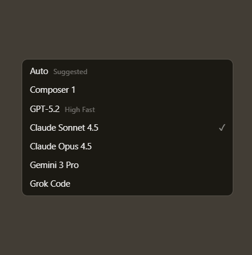
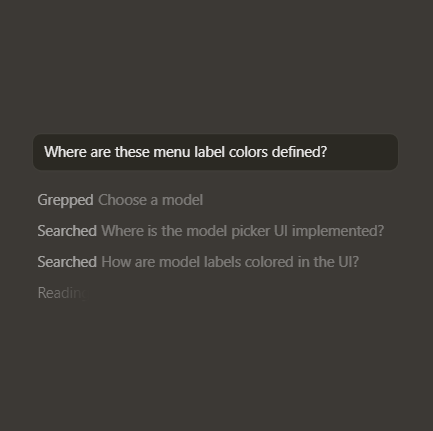

Agent turns ideas into code
A human-AI programmer, orders of magnitude more effective than any developer alone.
Learn about Agent →
A human-AI programmer, orders of magnitude more effective than any developer alone.
Learn about Agent →

Our custom Tab model predicts your next action with striking speed and precision.
Learn about Tab →Cursor is in GitHub reviewing your PRs, a teammate in Slack, and anywhere else you work.
Learn about Cursor's ecosystem →
It was night and day from one batch to another, adoption went from single digits to over 80%. It just spread like wildfire, all the best builders were using Cursor.
The most useful AI tool that I currently pay for, hands down, is Cursor. It's fast, autocompletes when and where you need it to, handles brackets properly, sensible keyboard shortcuts, bring-your-own-model... everything is well put together.
The best LLM applications have an autonomy slider: you control how much independence to give the AI. In Cursor, you can do Tab completion, Cmd+K for targeted edits, or you can let it rip with the full autonomy agentic version.
Cursor quickly grew from hundreds to thousands of extremely enthusiastic Stripe employees. We spend more on R&D and software creation than any other undertaking, and there's significant economic outcomes when making that process more efficient and productive.
It's official. I hate vibe coding. I love Cursor tab coding. It's wild.
It's definitely becoming more fun to be a programmer. It's less about digging through pages and more about what you want to happen. We are at the 1% of what's possible, and it's in interactive experiences like Cursor where models like GPT-5 shine brightest.
Choose between every cutting-edge model from OpenAI, Anthropic, Gemini, and xAI.
Explore more model ->
Cursor learns how your codebase works, no matter the scale or complexity.
Learn about more sementic search ->
Choose between every cutting-edge model from OpenAI, Anthropic, Gemini, and xAI.
Explore more model ->Subagents, Skills, and Image Generation
CLI Agent Modes and Cloud Handoff
New CLI Features and Improved CLI Performance
Layout Customization and Stability Improvements
A new interface and our first coding model, both purpose-built for working with agents.
Product · Oct 29, 2025Our new Tab model makes 21% fewer suggestions while having 28% higher accept rate.
Research · Sep 12, 2025Achieving a 3.5x MoE layer speedup with a complete rebuild for Blackwell GPUs.
Research · Aug 29, 2025